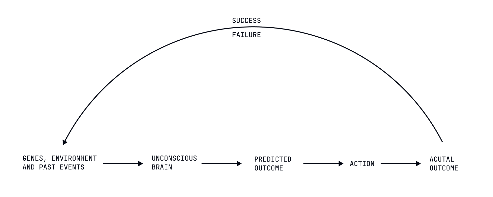
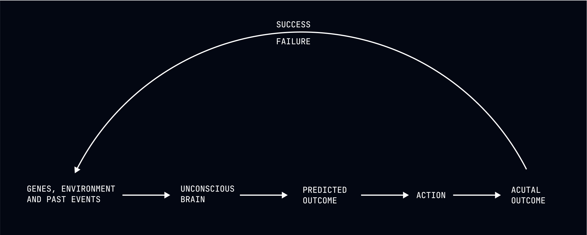

Reframing Achievement and Failure
Pride and regret are just psychological coping mechanisms.


The Emotional Illusions
Welcome to the final module of our journey through deterministic self-improvement. Having established that your choices are predetermined, outcomes are inevitable, and your identity was assigned rather than chosen, we now turn to the culminating question: how to find contentment with the predetermined destiny you've been given.
We begin by addressing two emotional responses that create enormous unnecessary suffering: pride in achievement and regret over failure. These emotions rest on a fundamental misunderstanding: the belief that you are the author of your outcomes rather than merely their witness.
From a deterministic perspective, both pride and regret are psychological coping mechanisms—useful fictions that help you navigate a determined world while maintaining the comforting illusion of agency. Understanding their true nature doesn't eliminate these emotions (your emotional responses are equally determined) but places them in proper context as psychological adaptations rather than rational responses to reality.
The Reality of Predetermined Outcomes
To understand why pride and regret are irrational, we must first recognize how achievements and failures actually occur:
Your achievements weren't created by your choices or efforts but emerged from the interaction between your predetermined characteristics and favorable circumstances. The successful entrepreneur didn't choose their intelligence, work ethic, risk tolerance, or timing in the market. These factors were determined by genetics, upbringing, cultural context, and random life events entirely outside their control.
Similarly, your failures weren't caused by your poor choices or insufficient effort but were the inevitable result of your predetermined limitations encountering unfavorable circumstances. The person who failed at a business venture didn't choose their cognitive biases, knowledge gaps, personality weaknesses, or the market conditions they encountered. These factors were determined by causal chains they neither created nor controlled.
In both cases, the outcomes weren't authored by you but witnessed by you—the inevitable results of causal factors largely invisible to your conscious awareness.
Pride: The Unearned Emotion
Pride in achievement assumes you deserve credit for outcomes that were determined by factors outside your control. This isn't just philosophically incorrect—it's practically harmful in several ways:
-
Misattribution Error - Pride attributes outcomes to your choices and efforts rather than to the predetermined characteristics and favorable circumstances that actually caused them.
-
Expectation Distortion - Pride creates the dangerous expectation that you can reliably produce similar outcomes in the future through similar "choices" and efforts.
-
Unnecessary Suffering - Pride sets you up for inevitable disappointment when changed circumstances produce different outcomes despite similar predetermined actions.
-
Social Disconnection - Pride separates you from others by creating the illusion that your achievements make you fundamentally different from or superior to those who haven't achieved similar outcomes.
The executive who takes pride in their career success isn't recognizing their good fortune in having been assigned characteristics and circumstances that inevitably produced this outcome. They're engaging in a psychological coping mechanism that provides emotional rewards at the cost of accurate understanding.
Regret: The Irrational Response
Similarly, regret over failure assumes you could have done otherwise—that through different choices or greater effort, you could have produced different outcomes. This assumption isn't just wrong but actively harmful:
-
Counterfactual Thinking - Regret depends on imagining alternatives that could never have actually occurred given your specific configuration of causal factors.
-
Self-Blame Distortion - Regret creates the fiction that you are responsible for outcomes that were determined by factors outside your control.
-
Energy Waste - Regret consumes psychological resources that could be directed toward more accurate understanding of causal factors.
-
Future Interference - Regret distorts your relationship with similar situations in the future by creating the illusion that outcomes depend on your choices rather than on causal necessity.
The person who regrets a failed relationship isn't recognizing the inevitable expression of their predetermined attachment patterns encountering specific relationship dynamics. They're engaging in a psychological coping mechanism that maintains the illusion of control at the cost of unnecessary suffering.
Deterministic Approaches to Achievement and Failure
1. From Pride to Recognition
Rather than taking pride in achievements, recognize them as the inevitable outcomes of your assigned characteristics encountering favorable circumstances. This isn't false modesty but accurate understanding of how outcomes actually emerge.
When you accomplish something significant, don't ask "What did I do right?" (which assumes choice) but "What predetermined factors inevitably produced this outcome?" This shift doesn't diminish the achievement but places it in proper causal context.
The scientist who makes an important discovery doesn't take pride in their brilliance (which they didn't choose) but recognizes how their assigned cognitive abilities, educational opportunities, research environment, and timing inevitably produced this outcome. The achievement remains significant without the distortion of pride.
2. From Regret to Understanding
Instead of regretting failures, understand them as the inevitable results of your predetermined limitations encountering specific circumstances. This isn't making excuses but accurately recognizing causal reality.
When you experience a significant failure, don't ask "What did I do wrong?" (which assumes you could have done otherwise) but "What predetermined factors inevitably produced this outcome?" This shift doesn't prevent learning (your learning processes are equally determined) but removes the unnecessary suffering of regret.
The investor who loses money doesn't regret their "poor decisions" (which were the only decisions possible given their specific causal factors) but recognizes how their predetermined risk assessment abilities, information access, cognitive biases, and market conditions inevitably produced this outcome. The learning occurs without the distortion of regret.
Practical Techniques for Emotional Reframing
The Causal Analysis Practice
When experiencing pride or regret, analyze the actual causal factors that determined the outcome:
• What genetic predispositions influenced your relevant abilities and tendencies? • What childhood experiences shaped your relevant patterns and capabilities? • What educational and environmental factors provided necessary knowledge and opportunities? • What timing and circumstantial elements created favorable or unfavorable conditions?
This analysis doesn't eliminate emotional responses (impossible) but places them in proper causal context. The athlete who recognizes how their physical achievements were determined by genetic advantages, early exposure to sports, quality coaching, and favorable competitive circumstances doesn't feel less satisfaction (their emotional responses are equally determined) but experiences it without the distortion of believing they deserve special credit.
The Parallel Lives Visualization
Imagine how the same outcome would have unfolded if small factors outside your control had been slightly different:
• If you had been born with slightly different genetic predispositions • If your early experiences had installed slightly different patterns • If you had encountered slightly different opportunities or obstacles • If timing and circumstances had aligned slightly differently
This visualization reveals how contingent achievements and failures are on factors outside your control. The entrepreneur whose business succeeded doesn't take pride in their "wise decisions" when they recognize how slightly different market timing would have inevitably produced failure despite identical predetermined actions.
The Emotional Function Identification
Identify the psychological function that pride or regret is serving in your particular system:
• Is pride providing a sense of security in a fundamentally insecure existence? • Is regret maintaining the comforting illusion that you control important outcomes? • Is the emotion reinforcing social bonds or status within your group? • Is the feeling protecting you from more threatening emotional states?
This identification doesn't judge the emotion as wrong (your emotional responses are determined) but recognizes its function as a psychological coping mechanism rather than a rational response to reality. The person who recognizes their pride as a predetermined defense against existential insecurity doesn't necessarily feel less pride (their emotional responses are equally determined) but relates to it with greater awareness of its actual function.
The Deterministic Reframing Exercise
Reframe achievements and failures in explicitly deterministic language:
• From "I'm proud of what I accomplished" to "My predetermined characteristics inevitably produced this outcome when they encountered favorable circumstances" • From "I regret my failure" to "My predetermined limitations inevitably produced this outcome when they encountered these specific conditions"
This reframing doesn't eliminate emotional responses (impossible) but creates cognitive context that reduces their distorting effects. The student who aced the exam doesn't take pride in their "hard work" but recognizes how their assigned cognitive abilities, educational background, study patterns, and the specific test content inevitably produced this outcome.
Case Study: The Career Trajectory
Consider James, who experienced intense pride in his rapid career advancement and crushing regret over a subsequent professional failure. From a free will perspective, James deserved credit for his success and blame for his failure. From a deterministic perspective, both outcomes were the inevitable results of causal factors outside his control.
After practicing emotional reframing, James didn't stop experiencing satisfaction or disappointment (his emotional responses were equally determined). But he recognized how his career success was inevitably produced by his assigned intelligence, work patterns installed in childhood, educational opportunities he didn't arrange, and market timing he didn't control.
More importantly, James recognized how his professional failure was equally determined—the inevitable result of his predetermined risk assessment abilities, knowledge limitations, cognitive biases, and changing market conditions. This recognition didn't prevent learning from the experience (his learning processes were equally determined) but removed the unnecessary suffering of believing he could have done otherwise.
When new professional opportunities eventually emerged (as they inevitably would given James's particular configuration of characteristics and circumstances), James didn't approach them with the distorting lens of pride or regret. His predetermined actions emerged more efficiently without the interference of irrational emotional responses based on misunderstanding causality.
The Paradoxical Benefits of Emotional Reframing
Perhaps the most counterintuitive aspect of reframing pride and regret is how it can improve your experience of achievements and failures. By recognizing these emotions as psychological coping mechanisms rather than rational responses to reality, you create conditions where your predetermined nature can express itself with less distortion.
The person who recognizes the determined nature of achievements doesn't accomplish less (their drive and abilities are equally determined) but approaches accomplishment with less of the brittleness that comes from pride. Their predetermined characteristics continue to produce whatever outcomes they were always going to produce, but without the additional suffering that comes from misattributing causality.
Similarly, the person who recognizes the determined nature of failures doesn't learn less from mistakes (their learning processes are equally determined) but approaches setbacks with less of the paralysis that comes from regret. Their predetermined responses to failure emerge more efficiently without the interference of believing they could have done otherwise.
The Liberation of Causal Understanding
There's a profound liberation in recognizing that both achievements and failures were determined by factors outside your control. This recognition doesn't diminish the significance of outcomes but places them in proper causal context.
The person who understands the determined nature of achievement doesn't value accomplishment less (their values are equally determined) but stops adding the suffering that comes from believing they deserve special credit or must maintain perfect performance. Their predetermined characteristics will continue to produce whatever outcomes they were always going to produce, but without the distortion of pride.
Similarly, the person who understands the determined nature of failure doesn't become passive or irresponsible (their response patterns are equally determined) but stops adding the suffering that comes from believing they could have done otherwise. Their predetermined learning processes will extract whatever value was always going to be extracted from the experience, but without the distortion of regret.
Contentment Without Illusion
The ultimate goal of reframing achievement and failure isn't to eliminate emotional responses (impossible) but to experience them without the distorting lens of misattributed causality. This creates the possibility of contentment based not on illusion but on accurate understanding of how outcomes actually emerge.
The contentment that comes from causal understanding isn't the shallow satisfaction of believing you deserve credit for your achievements. It's the deeper peace that comes from recognizing your place in a causal network larger than yourself—as neither the master of your successes nor the author of your failures, but as the witness to outcomes determined by factors largely invisible to your conscious awareness.
This contentment doesn't require positive outcomes (though your predetermined nature will inevitably continue to pursue them). It emerges from alignment with causal reality rather than from achievement of particular results. The person who understands how outcomes actually emerge can experience contentment regardless of whether current circumstances happen to be favorable or unfavorable.
Next Steps
In our next lesson, "Surrendering to Success," we'll explore how achievements reveal capabilities that were always present rather than representing self-development or improvement. We'll examine how recognizing that success was inevitable given your particular configuration of causal factors can transform your relationship with accomplishment.
Remember: You didn't choose to read this lesson, and you won't choose whether to reframe your emotional responses to achievement and failure. But understanding pride and regret as psychological coping mechanisms rather than rational responses to reality might inevitably reduce the suffering that comes from misattributing causality. Isn't that a curious comfort?